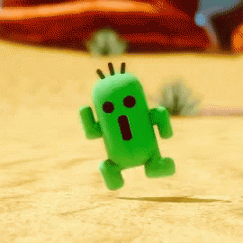

<app-header [isNotHome]="isNotHome" [pageTitle]="pageTitle"></app-header>

<ion-content [fullscreen]="true">

  <ion-fab horizontal="end" vertical="top" slot="fixed" >
    <ion-fab-button color="danger"  size="small" [routerLink]="['/login']" routerLinkActive="router-link-active" >
      <ion-icon name="log-out-outline"></ion-icon>
    </ion-fab-button>
  </ion-fab>

  <div id="container">
    <div col="12">
      
    </div>
    <div col="12">
      ¡Hola!
    </div>
  </div>
  

  
  <app-fab-menu></app-fab-menu>
</ion-content>
